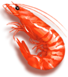
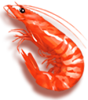
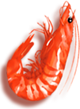
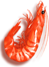

 



농심이 설립된 1965년부터 1970년까지는 라면에 대한 소비자들의 인식이 부족하여 시장규모 자체가 매우 협소한 실정이었습니다. 더욱이 라면시장이 춘추전국시대처럼 나뉘어져 각사들간의 경쟁이 치열한 시기였으며, 1971년에는 농심의 연간 매출액이 현재의 일주일 매출액 수준인 203억에 불과할 정도로 판매가 부진했습니다. 보릿고개가 있던 1970년 당시, 소고기는 잔치 때나 명절에만 맛볼 수 있는 귀한 음식이었는데 농심은 국내 최초로 소고기라면을 개발해내 별식 중의 별식으로 큰 각광을 받았습니다. 이렇게 소고기라면이 큰 히트를 치면서 시세가 점점 호전되어가는 시점에서 새우깡 탄생의 서곡이 울려 퍼지게 됩니다

새우를 주원료로 결정한 농심은 최상의 맛과 품질을 찾기 위해 당시의 사세로 볼 때 혁명이라고 할 수 있을 만큼의 재료도 아낌없이 사용했습니다. 혁명은 물량뿐만 아니라 기술적인 면에서도 이루어졌는데 일반적으로 과자를 만들 때 기름에 튀겨내지만, 새우깡의 경우 가열된 소금의 열을 이용해 튀겨내는 파칭(Parching)법을 창안해 새우 함량에 따른 최적의 맛과 조직감을 창출해 냈습니다. 특히 일반 파칭과 달리 식물성 기름인 팜유를 뿌려준 상태에서 파칭하는 독특한 기술을 발전시켜 더욱 고소하면서도 짭짤한 맛을 창조해냈습니다. 개발부서 담당자들은 연구에 몰두하느라 밤늦게까지 일하는 것은 물론이고 밤을 새우는 일도 잦았고 기계 앞에 가마니를 깔고 잠을 자가면서 연구에 몰두했었죠. 새우깡을 개발하기 위해 사용된 밀가루 양이 4.5톤 트럭 80대분에 이르렀는데 1970년대 초의 경제상황을 감안할 때 그것은 엄청난 양이었습니다. 새우깡의 시제품을 만드는 과정에서 튀김온도가 적절치 않아 수도 없이 태우는 과정을 반복했고, 또 가장 먹기에 적당한 강도를 유지하기 위한 강도 실험만도 수백 번이나 시행되었습니다.

새우깡이라는 브랜드명 역시 사람들에게 친근하게 불리워졌습니다. 사실 새우깡이라는 브랜드명은 개발 당시 농심 신춘호 회장이, 어린 딸이 ‘아리랑’을 ‘아리깡 아리깡……’ 이라고 부르는 것에서 힌트를 얻어 새우와 깡을 결합하여 ‘새우깡’이라고 이름을 지었습니다. 이는 우리 민족 고유의 음식 이름 중 ‘깡밥, 깡보리밥’ 등이 순박한 이미지로 가슴에 와 닿았고 ‘뻥튀기’도 같은 의미로 해석되었습니다. 따라서 자연스레 ‘아리깡, 깡, 뻥’ 등의 이미지가 결합되면서 ‘새우+깡’이라는 단어가 떠올랐죠. 새우깡이 히트한 이후로도 농심의 스낵제품에 ‘깡’이라는 단어를 사용하여 ‘감자깡’, ‘고구마깡’, ‘양파깡’ 등의 제품을 출시했고 타사에서도 이를 원용하고 있어 ‘~깡` 하면 대다수의 국민들이 스낵을 연상할 정도에 이르렀습니다.

새우는 키토산을 많이 함유하고 있는 저칼로리 고단백질 식품으로 스태미너에 좋은 식품들로 알려져 있습니다. 칼슘 함량이 생선 이상으로 많을 뿐 아니라, 혈중 콜레스트롤치를 낮추는 타우린이 풍부하게 들어 있어 노화방지 및 체내 불순물 제거, 고혈압을 비롯한 각종 성인병 등에 탁월한 효과가 있습니다. 비타민이 풍부하여 어린이 성장발육은 물론 미용 효과에도 좋습니다.
다른 식품에 비해서 손으로 바로 집어먹기 편하고 한 입에 먹을 수 있어서 부담 없이 즐길 수 있다는 것이 새우깡의 특성입니다. 달지 않고 새우의 깊은 고소한 맛에 절대 물리지 않죠. 새우깡은 생새우를 사용하기 때문에 새우 본래의 맛이 우수하며, 고소하고 짭짤한 맛이 우리 입맛에 딱 맞는 수준입니다. 또 씹으면서 느끼는 맛이 일품이어서 입에서 삼키는 순간 다시 그 맛을 즐기기 위해 반사적으로 무의식 중에 손이 가게 됩니다.


남녀노소
모두 좋아하는
새우깡!


언제든지
어디서나
새우깡과 함께!


맛있는건 즐겁다!
새우깡과 함께 즐겨요!